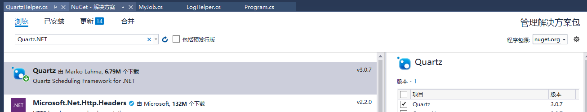

Quartz.NET是一个强大、开源、轻量的作业调度框架，是 OpenSymphony 的 Quartz API 的.NET移植，用C#改写，可用于winform和asp.net mvc、.Net Core应用中。它灵活而不复杂。你能够用它来为执行一个作业而创建简单的或复杂的作业调度。它有很多特征，如：数据库支持，集群，插件，支持cron-like表达式等等。
官网：http://www.quartz-scheduler.net/
源码：https://github.com/quartznet/quartznet
一，可以定时发邮件通知。
二 ， 电商网站的定时打折活动。（比如规定11月11日 淘宝购买女朋友打八折）
三， 定时对数据更新 或者添加。
四，自己朋友生日。 可以定时发生日祝福。 等等 （我也不一一举例了）
我使用的VS版本是2017的 选择工具 - NuGet包管理 - 管理解决方案的NuGet包 输入 Quartz.NET 安装

还可以通过NuGet控制台 通过安装命令
Install-Package Quartz一：继承并实现IJob接口，在Execute 方法中写你要定时执行的事情（切记 ）
二：使用Quartz创建任务调度核心代码步骤
1、配置Quartz，创建工厂，开启调度。
2、创建工作任务
3、创建触发器
4、将任务加入到任务池
三：添加任务，使用Topshelf部署Windows服务，定时执行
一：继承并实现IJob接口，在Execute 方法中写你要做的事情（切记 ）
1 using Quartz.Utility;
2 using System;
3 using System.IO;
4 using System.Threading.Tasks;
5
6 namespace Quartz.JobWork
7 {
8 public class MyJob : IJob
9 {
10 public Task Execute(IJobExecutionContext context)
11 {
12 Task task = null;
13 try
14 {
15 string fileName = "printlog.txt";
16 StreamWriter writer = new StreamWriter(fileName, true);
17 task = writer.WriteLineAsync(string.Format("{0},测试", DateTime.Now.ToLongTimeString()));
18 writer.Close();
19 writer.Dispose();
20 }
21 catch (Exception ex)
22 {
23 LogHelper.WriteLog(ex.Message.ToString(), ex);
24 }
25 return task;
26 }
27 }
28 }
二：使用Quartz创建任务调度核心代码步骤
注：这里提供一个QuartzHelper帮助类，直接把以下代码copy过去即可用，只需要重写Execute方法即可。Quartz3.0及以上的版本是采用的异步，3.0以下的版本没有采用异步，使用方法是一样的
1 using Quartz.Impl;
2 using System;
3 using System.Collections.Generic;
4 using System.Collections.Specialized;
5 using System.Linq;
6 using System.Text;
7 using System.Threading;
8 using System.Threading.Tasks;
9
10 namespace Quartz.Utility
11 {
12 public class QuartzHelper
13 {
14 static readonly IScheduler _scheduler;
15 static QuartzHelper()
16 {
17 var properties = new NameValueCollection();
18 // 设置线程池
19 properties["quartz.threadPool.type"] = "Quartz.Simpl.SimpleThreadPool, Quartz";
20 //设置线程池的最大线程数量
21 properties["quartz.threadPool.threadCount"] = "5";
22 //设置作业中每个线程的优先级
23 properties["quartz.threadPool.threadPriority"] = ThreadPriority.Normal.ToString();
24
25 // 远程输出配置
26 properties["quartz.scheduler.exporter.type"] = "Quartz.Simpl.RemotingSchedulerExporter, Quartz";
27 properties["quartz.scheduler.exporter.port"] = "555"; //配置端口号
28 properties["quartz.scheduler.exporter.bindName"] = "QuartzScheduler";
29 properties["quartz.scheduler.exporter.channelType"] = "tcp"; //协议类型
30
31 //创建一个工厂
32 var schedulerFactory = new StdSchedulerFactory(properties);
33 //启动
34 _scheduler = schedulerFactory.GetScheduler().Result;
35 //1、开启调度
36 _scheduler.Start();
37 }
38 /// <summary>
39 /// 时间间隔执行任务
40 /// </summary>
41 /// <typeparam name="T">任务类，必须实现IJob接口</typeparam>
42 /// <param name="seconds">时间间隔(单位：秒)</param>
43 public static async Task<bool> ExecuteInterval<T>(int seconds) where T : IJob
44 {
45 //2、创建工作任务
46 IJobDetail job = JobBuilder.Create<T>().Build();
47 // 3、创建触发器
48 ITrigger trigger = TriggerBuilder.Create()
49 .StartNow()
50 .WithSimpleSchedule(
51 x =>x.WithIntervalInSeconds(seconds)
52 //x.WithIntervalInMinutes(1)
53 .RepeatForever())
54 .Build();
55 //4、将任务加入到任务池
56 await _scheduler.ScheduleJob(job, trigger);
57 return true;
58 }
59
60 /// <summary>
61 /// 指定时间执行任务
62 /// </summary>
63 /// <typeparam name="T">任务类，必须实现IJob接口</typeparam>
64 /// <param name="cronExpression">cron表达式，即指定时间点的表达式</param>
65 public static async Task<bool> ExecuteByCron<T>(string cronExpression) where T : IJob
66 {
67 //2、创建工作任务
68 IJobDetail job = JobBuilder.Create<T>().Build();
69 //3、创建触发器
70 ICronTrigger trigger = (ICronTrigger)TriggerBuilder.Create()
71 .StartNow()
72 .WithCronSchedule(cronExpression)
73 .Build();
74 //4、将任务加入到任务池
75 await _scheduler.ScheduleJob(job, trigger);
76 return true;
77 }
78 }
79 }
三：添加任务，Topshelf部署Windows服务，定时执行
1 namespace Quartz
2 {
3 public class Program
4 {
5 static void Main(string[] args)
6 {
7 string cronExpression = "0 0 8,23 * * ? "; //=>这是指每天的9点和16点执行任务
8 cronExpression = "30 0/1 * * * ?";
9 //QuartzHelper.ExecuteByCron<MyJob>(cronExpression).Wait(); //=>这是调用Cron计划方法
10 QuartzHelper.ExecuteInterval<MyJob>(180).Wait();
11 /*
12 简单说一下Cron表达式吧，
13
14 由7段构成：秒 分 时 日 月 星期 年（可选）
15
16 "-" ：表示范围 MON-WED表示星期一到星期三
17 "," ：表示列举 MON,WEB表示星期一和星期三
18 "*" ：表是“每”，每月，每天，每周，每年等
19 "/" :表示增量：0/15（处于分钟段里面） 每15分钟，在0分以后开始，3/20 每20分钟，从3分钟以后开始
20 "?" :只能出现在日，星期段里面，表示不指定具体的值
21 "L" :只能出现在日，星期段里面，是Last的缩写，一个月的最后一天，一个星期的最后一天（星期六）
22 "W" :表示工作日，距离给定值最近的工作日
23 "#" :表示一个月的第几个星期几，例如："6#3"表示每个月的第三个星期五（1=SUN...6=FRI,7=SAT）
24
25 如果Minutes的数值是 '0/15' ，表示从0开始每15分钟执行
26
27 如果Minutes的数值是 '3/20' ，表示从3开始每20分钟执行，也就是‘3/23/43’
28 */
29 HostFactory.Run(x =>
30 {
31 x.UseLog4Net();
32 x.Service<TownCrier>(s =>
33 {
34 s.ConstructUsing(name => new TownCrier());
35 s.WhenStarted(tc => tc.Start());
36 s.WhenStopped(tc => tc.Stop());
37 });
38 x.RunAsLocalSystem();
39 x.SetDescription("QuartzJob任务定时发送");
40 x.SetDisplayName("QuartzJob");
41 x.SetServiceName("QuartzJob");
42
43 x.EnablePauseAndContinue();
44 });
45 }
46 }
47 }TownCrier服务实现类
1 public class TownCrier
2 {
3 readonly Timer _timer;
4 public TownCrier()
5 {
6 _timer = new Timer(1000) { AutoReset = true };
7 _timer.Elapsed += (sender, eventArgs) => Console.WriteLine("---------------------DateTime： {0} ------------------- ", DateTime.Now);
8 }
9 public void Start() { _timer.Start(); }
10 public void Stop() { _timer.Stop(); }
11 }
最后就可以做自己想要做的事情了！
下期讲解使用Topshelf部署Windows服务!